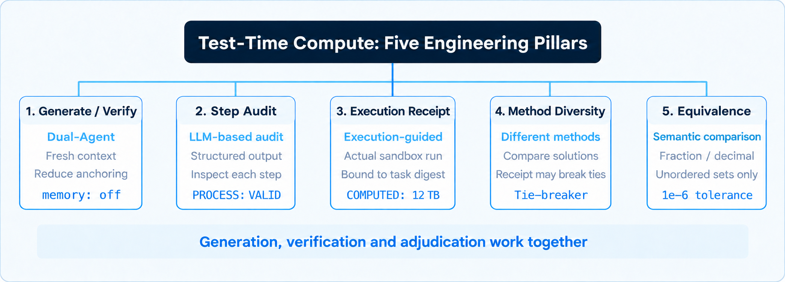
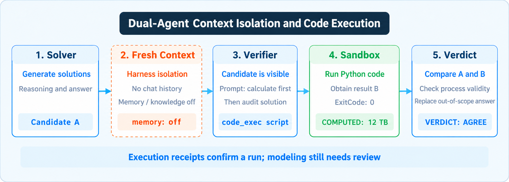

Three layers of architecture · Step-by-step process audits · Code execution receipts · How model-level reasoning and system-level controls complement each other
Ask a language model to write creatively or comment on the AI industry and its verbal fluency can be impressive. In HexClaw Desktop, we asked “Who are the heroes of AI?” The assistant responded in the style of a conversation over wine, weaving familiar AI personalities into the story:

Figure 1: “Who are the heroes of AI?” in HexClaw Desktop, with the K12 skin in dark mode.
From Claude as a frost-wielding “Night King of the North” to Gemini with its mountain of supplies; from Grok flying through an ETC toll lane and launching rockets to DeepSeek opening its stores to help others: pattern matching and literary rhetoric can make for a playful response.
The challenge changes when the task moves from creative writing to calculation. Consider the sixth-grade storage problem discussed in "How to calculate 12 TB from 4.8 TB?":
A language model performing mathematical reasoning still predicts the next token. A long reasoning trace can look rigorous even when a small numerical or dimensional error appears in an intermediate step. Subsequent text may build on that error, and language-only self-reflection can rationalize rather than correct it. Tutoring and engineering systems therefore need ways to check the work and show when the evidence is insufficient.
Why can the same model write a playful dialogue but still need external checks for symbolic logic and numerical calculations?
Core judgment of this article:
This article focuses on checking computable and strictly symbolic tasks. Execution evidence can show that a program ran, but it cannot by itself prove that the program modeled the problem correctly. Open-ended subjective questions may remain UNVERIFIABLE and require human review.
1. A model reviewing its own work in the same context can be anchored by its earlier reasoning. Spending more reasoning tokens alone does not establish ground truth;
2. The design combines separate generation and verification with execution-guided verification. The verifier receives a fresh context and a restricted tool set. Its prompt asks it to recalculate independently before auditing the proposed solution; a real execution receipt supplies evidence for numerical comparison, but cannot prove that the model built the right program;
3. A four-line process-audit protocol, sandbox execution, and solution-diversity checks provide practical controls without training a dedicated process reward model. They can be used with local models such as DeepSeek-R1 and the Qwen distilled models discussed in "Bridge the Last Mile for Local Inference Models". Their reliability still depends on the model, problem, execution environment, and evaluation; no particular model size guarantees correctness.
30-second version:
Relying on a model to review itself in a closed context can reinforce its own mistakes. Using HexClaw’s
engine/solve.goandengine/solve_verifier_node.goas examples, this article covers fresh-context isolation (memory: off, knowledge: off), an instruction to calculate independently before auditing, a four-line process-audit protocol, and task-bound execution receipts. It then examines diverse solution sampling and the1e-6comparison tolerance. A receipt is execution evidence, not proof that the mathematical formulation or model judgment is correct.
From fast thinking to slow thinking: test-time compute and the limits of self-correction
AI researcher Andrej Karpathy has used the contrast between System 1 (fast thinking) and System 2 (slower, deliberate reasoning) to discuss language models. Test-Time Compute explores how additional computation at inference can support reasoning, search, and verification.
At TED AI 2024, OpenAI researcher Noam Brown described a poker experiment: in that setting, giving a poker bot 20 seconds to search produced a gain comparable to scaling both model size and training time by 100,000 times. This comparison is specific to the experiment; it is not a universal conversion between extra thinking time and language-model pretraining compute.
In 2020, Dario Amodei and collaborators published Scaling Laws for Neural Language Models. Their work reported empirical pretraining scaling laws relating language-model loss to model size, data, and compute. These observations helped motivate substantial investment in training larger models.
More recently, researchers have also investigated test-time scaling: allocating additional computation while answering. OpenAI o1 demonstrated a reasoning-oriented model; the DeepSeek-R1 paper explored reinforcement learning with DeepSeek-R1-Zero and combined cold-start data with further training for DeepSeek-R1. DeepSeek-V4.1-Flash and the DeepInfer inference framework (github.com/deepseek-ai/DeepInfer) illustrate another part of the engineering landscape: efficient model serving. Model-side reasoning and system-side verification address different parts of the problem.
When reasoning models are used in demanding workflows, longer responses do not guarantee correction. A model may instead rationalize an earlier mistake. In Can Large Language Models Reason and Plan?, Subbarao Kambhampati discusses the limits of self-correction and planning in language models. External feedback can help evaluate an output, but the checks themselves must also be examined.
Architecture overview: three layers and five test-time compute pillars
Research and products such as OpenAI o1/o3, DeepSeek-R1, and Stanford s1 explore how extra computation can improve reasoning. HexClaw applies related ideas in a three-layer architecture of generation, verification, and adjudication. The following diagram maps five engineering pillars to the open-source implementation:

Figure 2: Five test-time compute pillars and their HexClaw implementations
These five pillars illustrate how the system separates generation, verification, and decision-making. Each supplies a distinct check or constraint; none alone guarantees a correct answer.
How model-level reasoning and system-level verification complement each other
In technical exchanges, a common question from many engineers is: 'OpenAI o1 and DeepSeek-R1 already support long thinking within the model; why does the application layer still need to implement dual-agent and code sandbox verification externally?'
The key distinction is that model-level reasoning and system-level verification can complement each other.
| Comparison Dimension | OpenAI o1 / DeepSeek-R1 | HexClaw's open-source architecture for solve.go |
|---|---|---|
| implementation hierarchy | Model level Train the model for reasoning, including with reinforcement learning; some models expose reasoning in <think> tokens |
System / Harness-Level (system framework layer) Orchestrate Solver + Verifier dual agents + code execution sandbox using external harnesses |
| working mode | Model-generated reasoning within the inference process | A fresh verifier context excludes session memory; the prompt asks it to recalculate before auditing the supplied solution. The candidate is still visible in that prompt. |
| verification means | Model-generated reasoning; the model itself does not guarantee an external execution check | For supported numerical tasks, sandbox execution can produce a receipt; the structured verifier and general tool loop handle missing or failed execution differently |
| computing power threshold | Training a reasoning model can require substantial data and compute; the exact requirements depend on the training method | Local 7B/14B models can use the system controls for supported tasks, subject to their capabilities and the execution environment; the arrangement does not guarantee correctness. |
| Evidence and limitations | may still produce more rhetorically deceptive 'high-confidence hallucinations' after lengthy self-reflection | Two tracks: a complete sandbox receipt supplies execution evidence, while model-produced verdicts and process checks remain model judgments. Failure handling differs between the structured verifier and general tool loop. |
| relationship between both | Focus on the model's internal reasoning and hypothesis generation (Generator cornerstone) | Complementary roles: model reasoning proposes a solution; system-level checks supply execution evidence and control the decision flow. |
Our earlier Loop Engineering article discussed moving control into the surrounding system. Anthropic’s Building Effective Agents describes the evaluator–optimizer workflow as an iterative pattern with a generator and an evaluator:
Anthropic describes evaluator–optimizer as a useful workflow when evaluation criteria are clear and feedback can demonstrably improve an output. Its guidance also discusses environmental feedback for agents. The following distinction is our engineering interpretation: an execution receipt can verify that a program ran, while the program’s modeling and the evaluator’s judgment still require scrutiny.
— Anthropic Engineering, Building Effective Agents (2024-12)
A common question from architects is: “If inference acceleration already uses DeepInfer, or the base model is DeepSeek-R1 / o1 with long thinking, why does the application need an external dual-agent system and sandbox?”
These layers can complement each other. DeepInfer addresses inference serving and latency; reasoning models such as R1/o1 generate candidate reasoning; HexClaw’s system layer can record actual program execution and compare results. A successful receipt is useful evidence of execution, not independent proof that the generated code models the question correctly.
The following sections trace the five pillars through HexClaw’s implementation.
Pillar 1 · Separate solving and verification (Dual-Agent)
Our Harness Engineering article introduced a maker/checker pattern: in finance, the person performing a transaction and the person reviewing it are separate. The cyber workhorse should not simply certify its own work.
In HexClaw’s engine/solve.go, the solving flow assigns distinct roles to separate subagents:
A common two-stage review simply appends the solver’s full conversation and asks whether the answer is correct. Seeing the earlier reasoning can anchor the verifier and encourage it to agree, even when the derivation contains an error.
HexClaw gives the verifier a fresh runtime context:
The metadata excludes the main session history and long-term memory (memory: off); see "Agent Memory That Can 'Dream'". It also disables the external knowledge base (knowledge: off) discussed in Context Engineering. This fresh-context isolation reduces interference from prior session history and unrelated tools. The verifier still receives the original problem, the full proposed solution, and the candidate answer; those are not hidden.
At the prompt level, the verifier is instructed to recalculate independently before auditing the proposed solution:
“For numerical questions, first write code using code_exec to calculate an answer independently, without trusting the proposed solution. Then audit the complete solution step by step.”— Translated excerpt fromhexclaw/engine/solve.go:1230prompt template
The problem, candidate answer, and complete solution are supplied in the same prompt. “Calculate first, audit second” is therefore a prompt-level ordering constraint, not a two-round blind review that physically hides the candidate answer. The instruction can reduce anchoring but cannot guarantee that the model follows the intended order.

Figure 3: Solver, verifier, and code execution flow. Exit code 0 alone is insufficient: the receipt must also be task-bound and complete, and successful execution cannot prove the model is correct. An out-of-scope answer is replaced after an in-scope re-solve; disagreement alone does not imply replacement.
Pillar 2 · Step-by-step process audits: a lightweight engineering protocol
Checking only the final answer can miss an important case: an accidentally correct result. Two errors in the reasoning may cancel out, leaving the right number for the wrong reasons.
An outcome reward model (ORM) evaluates the result and can miss faulty intermediate reasoning. OpenAI’s Let's Verify Step by Step discusses process reward models (PRMs) that assess individual steps. Training a dedicated PRM requires labeled step-level data and compute; the engineering cost can be substantial.
HexClaw does not train a dedicated PRM here. As discussed in Prompt Engineering, it uses a structured four-line prompt and an LLM as a judge to represent the process-audit result. This is an engineering protocol, not a trained PRM or a guarantee of equivalent accuracy:
The format below applies when a curriculum constraint is supplied; without one, the verdict line does not include OUT_OF_SCOPE.
In verifySolutionWithGuides (solve.go:874-876), an invalid process verdict takes precedence over an otherwise matching answer, except for the separate out-of-scope case:
When the process is marked PROCESS: INVALID, the verdict becomes DISAGREE unless the solution is out of scope. formatSolve (solve.go:1570; warning rendering at line 1614) presents the warning but does not make the decision. In the structured verifier, solve_verifier_node.go also defines a verificationStep JSON contract for step-level audit data.
If the answers match but the process is marked invalid, the system reports a failed verification. This protects against a correct final number reached through a faulty process; the accuracy of the process label still depends on the verifier.
Pillar 3 · Execution receipts: dual-track decisions and task binding
A model evaluating another model’s natural-language output can make its own errors. Program-Aided Language Models (PAL, Gao et al., 2022) illustrates a different division of labor: the model formulates a program, while an interpreter performs the calculation. The interpreter’s result still depends on the program it was given.
The essential distinction is: successful execution does not prove correct mathematical modeling.
Take the storage example: 4.8 TB represents 2/5 of the total, so the total is 12 TB. A model could mistakenly use multiplication instead of division:
Exit code 0 establishes that the Python process completed successfully; it does not establish that “part divided by proportion” was modeled correctly. A verification chain must ask three separate questions: did the program execute, can its output be compared, and does the proposed reasoning hold? Calling all three simply “verified” hides those distinctions.
HexClaw restricts the verifier’s available tool to code_exec. The scheduler verifySolutionWithGuides (solve.go:845-856) uses computedOutput(attempt.Task) to inspect the execution receipt:
The receipt cannot establish a successful, complete execution if it reports a timeout, missing runtime, error, nonzero exit code, or truncated output. executionInputDigest(task) binds the receipt to a SHA-256 digest of the task input. These checks do not establish that the generated code implements the intended mathematics.
Output parsing first looks for a line matching (?im)^COMPUTED:[ \t]*([^\r\n]+). If there is no marker, a single clean output line is accepted as a fallback. The test at engine/solve_storage_quantity_test.go:72 checks receipt recognition and the solve_evidence=numeric_exec metadata binding.
A subtler issue is audit tampering during syntax repair. A verifier’s Python program can fail to compile, for example because of an IndentationError. If the whole task is regenerated, the model might also change an earlier INVALID process judgment to VALID. In solve_verifier_node.go, the structured verifier allows a limited syntax repair while retaining the first audit result:
Even if the repaired program runs successfully, the original process veto is retained. The behavior is covered by solve_verifier_syntax_repair_test.go: preserve_invalid_audit.
The decision has two tracks: a sandbox receipt supplies evidence of program execution; VERDICT and PROCESS remain model-produced judgments. The structured verifier returns an error when it cannot obtain a valid receipt. The general tool path can fall back to weaker solve_evidence: model evidence in applicable missing-receipt cases; known failures and timeouts have separate handling. The hexclaw-desktop UI badge (VerifyBadge.vue) distinguishes program execution evidence from model-only review.
Pillar 4 · Test-time sampling and solution diversity
Another use of test-time compute is sampling and voting. Here, “search” means multiple candidate solutions and cross-checks, not a claim that the system uses Monte Carlo tree search or beam search.
HexClaw exposes two controls in the tool input:
In Self-Consistency (Wang et al., ICLR 2023), multiple solutions are sampled using the same prompt and combined by majority vote. If the problem contains a systematic trap, similarly prompted samples can repeat the same mistake; voting alone may not remove the bias.
The engine also supports method diversity: varying the requested solution method, rather than only the sampling temperature.
“Use a conventional derivation for method one. For method two, deliberately use a different approach, such as a substitution, a reverse tape diagram, or a visual argument.”
Agreement between two different methods and a sandbox result provides additional cross-checking evidence, but does not rule out a shared modeling error. If the methods disagree, the system attempts to use the independent verifier’s valid numerical execution evidence as a tie-breaker: when the computed result matches a candidate group, it returns that solution only if the verdict is not DISAGREE or the match is not the primary solution. A matching primary solution with a DISAGREE verdict instead proceeds to process-warning handling. When the result matches no group, the system preserves the disagreement and calls for human review. A valid receipt still cannot establish that the program models the problem correctly. The excerpt below omits the remaining branches and warning handling:
A previously fixed issue (engine/solve.go:436 BUG-20260708) illustrates why result voting alone is insufficient. In the "K12 Engineering Practice" scenario, a verifier could mark a method OUT_OF_SCOPE and request a new solution under stricter constraints. If both methods produced the same number, ordinary vote merging could keep the original out-of-scope method first. The corrective replacement instead removes that method in favor of the revised solution.
Pillar 5 · Symbolic and semantic equivalence with tolerances
An equivalence check can reject correct answers solely because their formats differ. For example, the solver may output 0.5 while the verifier outputs 1/2, or unordered answers may appear as 8 and 12 and 12 and 8. A plain string == string comparison would treat them as different.
The comparison primitives in engine/solve.go:1283-1464 address these cases:
func answersEqual(a, b string) bool { as, aok := numberSet(a) bs, bok := numberSet(b) if aok && bok { return numberSetsEqual(as, bs) } if equal, comparable := sameUnitAnswersEqual(a, b); comparable { return equal } return normalizeAnswer(a) == normalizeAnswer(b) }
The core logic here consists of three progressive layers:
1. Numbers and tolerance: Parse numeric values and compare them using a 1e-6 absolute/relative tolerance. This permits 1/2 == 0.5 while distinguishing values such as 42 and 48. sameUnitAnswersEqual also handles supported same-unit quantities, such as TB, km/h, or percentages;
2. Unordered solution sets: Normalize unordered answers before comparison. For explicitly named or positional answers, such as “A: 8, B: 12” versus “A: 12, B: 8,” preserve the name and position bindings rather than swapping them;
3. Conservative decisions: answersEqual requires sufficient evidence for equality, while answersDefinitelyDiffer handles supported numeric sets and comparable same-unit quantities. Unclear text forms are treated cautiously rather than forcing a definitive verdict.
Engineering cost and adaptive triage: spending expensive inference compute where it matters most
The full generation-and-verification path can require multiple model calls and sandbox execution. Latency and token use depend on the model, hardware, problem, and execution path. The source article’s illustrative timings and multipliers were not accompanied by those measurement details, so they should not be treated as general guarantees.
Research by UC Berkeley and Google DeepMind (Snell et al., 2024) studies allocating test-time search and verification compute according to problem difficulty. HexClaw applies a related engineering idea at its entry point: adaptive complexity triage.
The policy is light by default, more work when needed. The triage logic uses local rules rather than another model call; the source does not provide a timing benchmark for those rules:
Simple problems: when automatic triage selects complexityTrivial, grading is off, and no new explanation is requested, the solver can answer without invoking the independent verifier;
Hard problems: in automatic mode, complexityHard can trigger method_diversity and two solution methods. Sandbox-based numeric verification applies only where the task supports computation;
Independence: in the default single-model configuration, Solver and Verifier use the same base model. Their contexts and available tools differ, and the prompt asks the verifier to calculate independently first. This is not independent model training or a guaranteed blind review.
The limits of this version
No system should promise zero errors. The current approach has practical limits and costs:
- Open-ended questions: a sandbox cannot provide decisive verification for every subjective or qualitative answer. For general concepts without a unique numerical result, the verifier may return
UNVERIFIABLEand the result requires human review; - Latency and cost: more model calls and sandbox execution can increase response time and token use. The impact depends on the task, model, hardware, and execution path;
- Curriculum scope:
OUT_OF_SCOPEdepends on the allowed-method constraints supplied to the verifier. Without clear constraints, the system cannot guarantee that a solution follows a particular grade’s curriculum; - Execution environment: the verifier needs an available, trusted Python runtime. If execution fails or a receipt is missing, the structured verifier can return an error; the general tool path can fall back to model-only evidence in applicable missing-receipt cases. Known execution failures and timeouts retain their own error handling.
The source article also discusses development on feat/code-exec-sandbox-autonomy, including streaming local-model reasoning and work toward streaming execution receipts. It identifies faster sandbox startup and deterministic parsing for more non-numeric logic as areas for further work, not as a guarantee for every released configuration.
Back to the fraction problem: two engineering constraints for reliable test-time compute
Return to the sixth-grade example: 4.8 TB is 2/5 of the total (see "How to calculate 12 TB from 4.8 TB?" for the full derivation). Reliable tutoring requires more than the model’s self-assessment. The two controls below provide useful evidence and constraints, but do not eliminate every possible error:
Fresh context and prompt ordering: the verifier’s context excludes session memory and knowledge (memory: off, knowledge: off). It is instructed to calculate independently before auditing the supplied solution. Because the candidate and solution are still in the same prompt, this is an instruction-level constraint rather than a physical blind review;
Task-bound execution receipts: a successful receipt binds actual program execution to the task and can support numerical comparison or tie-breaking. It does not establish that the generated code models the problem correctly or that every reasoning step is valid.
The value of this arrangement is a clearer evidence chain: separate the model’s proposed reasoning, an independent verification attempt, and actual execution evidence. Its reliability must still be assessed for the model and task in use.
More thinking time does not automatically produce truth.
An execution receipt shows what ran;
the model, formulation, and reasoning still need verification.
Previous articles · HexClaw AI series
▸ Loop Engineering in HexClaw: Four Generations, from Prompt to Loop, Through an Open-Source Agent’s Code
Series overview: the control plane and the agent execution loop
▸ Harness Engineering in HexClaw: the Model Supplies the Intelligence, the Harness Makes It Fit for Work
Permission gates, maker/checker roles, and independent verification
▸ Context Engineering in HexClaw: Keeping Answer-Like Noise Out of the Loop
Retrieval noise filtering and release evaluation
▸ Prompt Engineering in HexClaw AI: Declared Dead, It Became the Agent’s Lowest-Level Protocol
Structured outputs and process protocols
▸ Agent Memory That Dreams: Claude and ChatGPT Dream in the Cloud; HexClaw Dreams on Your Machine
Memory management and fresh-context verification
▸ HexClaw AI’s Thinking Process: The Last Mile for Qwen 3.5, Gemma 4, and DeepSeek-R1
Local reasoning models and thinking-tag processing
▸ Calmer Homework Time with HexClaw AI: Engineering the First K12 Flagship Scenario
K12 verification evidence and scenario architecture
▸ How Does 4.8 TB Become 12 TB? A Teacher’s Approach to a Sixth-Grade Fraction Problem
A real example of visual reasoning and Socratic questioning
References
- Jared Kaplan, Dario Amodei et al., Scaling Laws for Neural Language Models, OpenAI, 2020.
https://arxiv.org/abs/2001.08361 - Andrej Karpathy, Intro to Large Language Models, 2023.
Public Lectures & Cognitive Architecture Discussions · Intro to Large Language Models (2023) - Noam Brown, AI won’t plateau — if we give it time to think, TEDAI San Francisco, October 2024.
TED talk - Anthropic Engineering (Erik Schluntz, Barry Zhang), Building Effective Agents, 2024-12.
https://www.anthropic.com/research/building-effective-agents - Subbarao Kambhampati, Can Large Language Models Reason and Plan?, Annals of The New York Academy of Sciences, 2024.
DOI: 10.1111/nyas.15125; arXiv:2403.04121 - Niklas Muennighoff et al., s1: Simple test-time scaling, 2025.
https://arxiv.org/abs/2501.19393 - Lightman et al., Let's Verify Step by Step (Process Reward Models, PRM), OpenAI, 2023.
https://arxiv.org/abs/2305.20050 - Wang et al., Self-Consistency Improves Chain of Thought Reasoning in Language Models, ICLR 2023.
https://arxiv.org/abs/2203.11171 - Luyu Gao et al., PAL: Program-aided Language Models, ICML 2023.
https://arxiv.org/abs/2211.10435 - Snell et al., Scaling LLM Test-Time Compute Optimally can be More Effective than Scaling Model Parameters, UC Berkeley & Google DeepMind, 2024.
https://arxiv.org/abs/2408.03314 - DeepSeek-AI, DeepSeek-R1: Incentivizing Reasoning Capability in LLMs via Reinforcement Learning, 2025.
https://arxiv.org/abs/2501.12948 - DeepSeek-AI, DeepSeek-V4.1-Flash and DeepInfer: High-performance, large-scale inference framework for DeepSeek models.
https://github.com/deepseek-ai/DeepInfer
Source code verification is based on the HexClaw main branch and the feat/code-exec-sandbox-autonomy evolution branch (2026-10-31), involving engine/solve.go, engine/solve_verifier_node.go with engine/solve_execution_receipt.go.